From a chatbot to an agent
A chat model maps a prompt to a single text response. An agent is a model placed in a loop: it can take actions in an environment, observe the results, and decide what to do next, all in service of a goal.
Three ingredients turn a model into an agent: reasoning (plan and decompose), tools / actions (reach beyond text), and a feedback loop with the world.
This lecture follows the capability arc: reasoning → tool use → deep research → coding agents → web and computer use → connecting agents to the world (MCP, Skills). The safety and security implications of agents are the subject of the next lecture.
Workflows vs. agents
Workflow
LLMs and tools are orchestrated through predefined code paths. The control flow is fixed by the engineer; the model fills in the blanks.
Agent
The LLM dynamically directs its own process and tool use, keeping control over how it accomplishes the task. The path is decided at run time.
Both build on one block: the augmented LLM, a model equipped with retrieval, tools, and memory. The guiding advice: start with the simplest thing that works, and add agentic complexity only when simpler calls fall short.
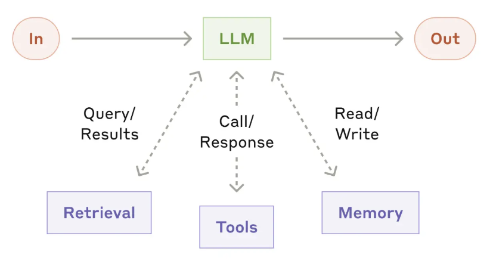
A small set of composable patterns
Most successful systems are not complex frameworks but compositions of a few patterns. The first five are workflows; the last is a true agent.
Prompt chaining
Fixed sequence of calls; each step processes the previous output, with optional intermediate checks.
Routing
Classify the input, then dispatch to a specialized prompt or model.
Parallelization
Run calls at once: sectioning (split subtasks) or voting (aggregate diverse runs).
Orchestrator-workers
A lead LLM breaks down a task, delegates to workers, and synthesizes the results.
Evaluator-optimizer
One LLM generates, another critiques; loop until the evaluation criteria are met.
Autonomous agent
Uses tools in a loop on environmental feedback; plans and acts independently with human checkpoints.
Reasoning
Make the model show its work
Standard few-shot prompting gives only input → answer exemplars, and large models still fail multi-step arithmetic and reasoning. Chain-of-thought adds a few exemplars that include the intermediate reasoning steps, so the model generates its own reasoning before answering.
- No fine-tuning, no gradients: purely in-context.
- Works with a handful (e.g. 8) of worked examples.
- Decomposes a hard problem into steps the model can handle.
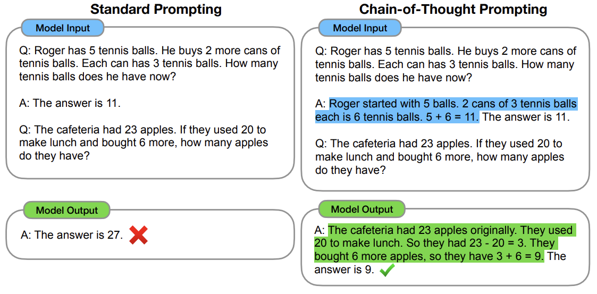
It only works once the model is big enough
On small models CoT gives little or no benefit, and can even hurt. The gains show up only around the ~100B parameter scale, which makes CoT an emergent ability: flat for small models, then rising steeply once the model is large enough.
On GSM8K, PaLM 540B with CoT also passed a fine-tuned GPT-3 175B plus a verifier, the prior state of the art.
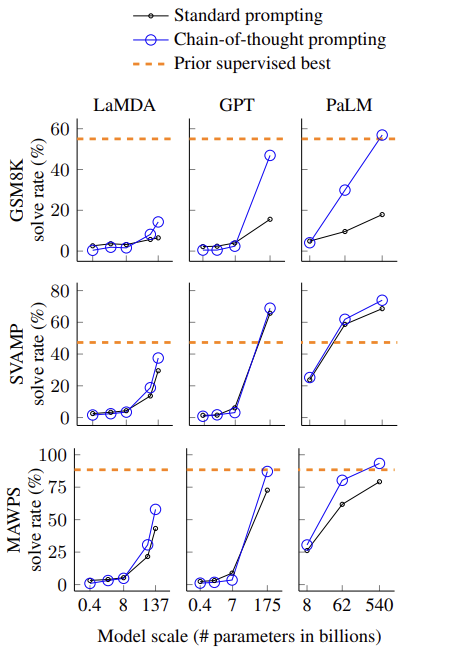
The same trick spans different kinds of reasoning
CoT is not just for arithmetic. The same format, a few worked examples that spell out their reasoning, helps across arithmetic, commonsense, and symbolic reasoning.
- Arithmetic: GSM8K, SVAMP, MAWPS math word problems.
- Commonsense: CSQA, StrategyQA, date and sports questions, robot planning (SayCan).
- Symbolic: last-letter concatenation, coin-flip state tracking.
In each task the model writes out the intermediate steps (highlighted) before it commits to an answer.
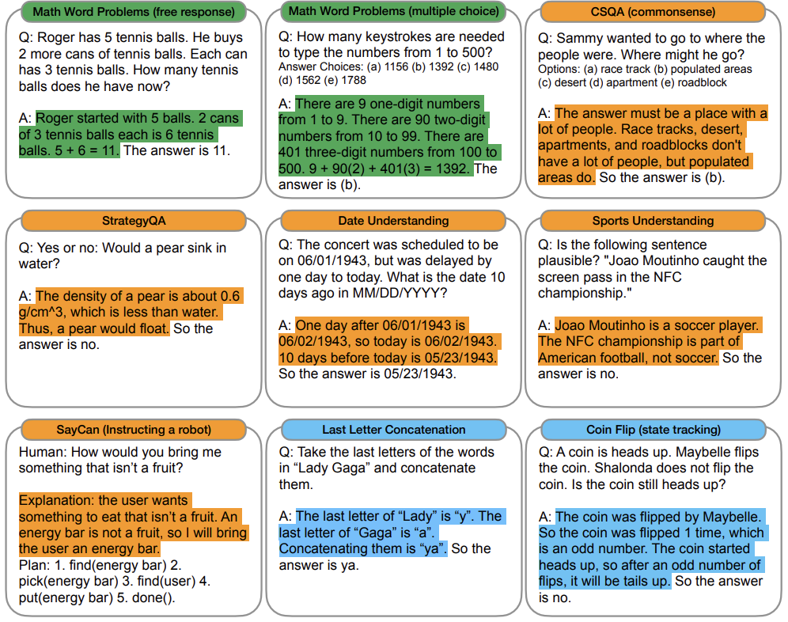
Interleave thinking with acting
Pure CoT can hallucinate; pure acting lacks planning. ReAct interleaves both in one trace, prompted with only 1 to 2 examples.
- Thought: free-form reasoning, decompose and decide.
- Action: call a tool (e.g.
search[...]). - Observation: the result, fed back into context.
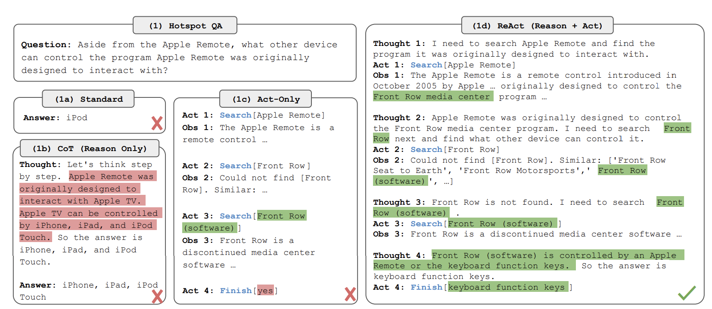
The same loop, now acting in a world
In ALFWorld, the agent navigates a simulated home to reach a goal (here: put a pepper shaker on a drawer). Act-only takes blind actions and gets stuck repeating ones that do nothing. ReAct's interleaved thoughts (blue) decide where to look and track the sub-goal, so it finds the object and completes the task.
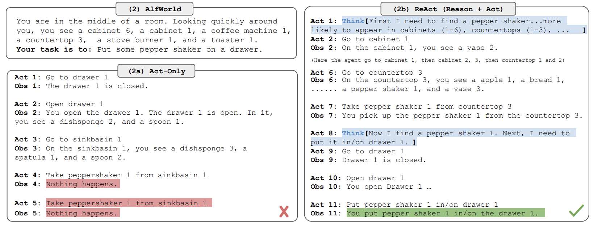
Reasoning + acting beats either alone
Across knowledge and decision tasks, ReAct's reasoning is more grounded and interpretable than CoT's. On the two decision tasks, 1 to 2 examples beat trained baselines:
What "combining" means here
ReAct already reasons, but over retrieved facts. CoT-SC reasons from the model's own knowledge (majority vote over sampled chains). The best HotpotQA method, ReAct → CoT-SC, runs ReAct and falls back to CoT-SC only when it cannot answer within a step budget.
Tool use
Learn tool use from the model's own signal
LLMs fail at things tiny tools do trivially: exact arithmetic, factual lookup, today's date, translation. Toolformer teaches a model to decide which API to call, when, and with what arguments, in a self-supervised way needing only a few demonstrations per tool.
Tools: a calculator, a question-answering system, Wikipedia search, a translation system, and a calendar. Base model: GPT-J (6.7B).
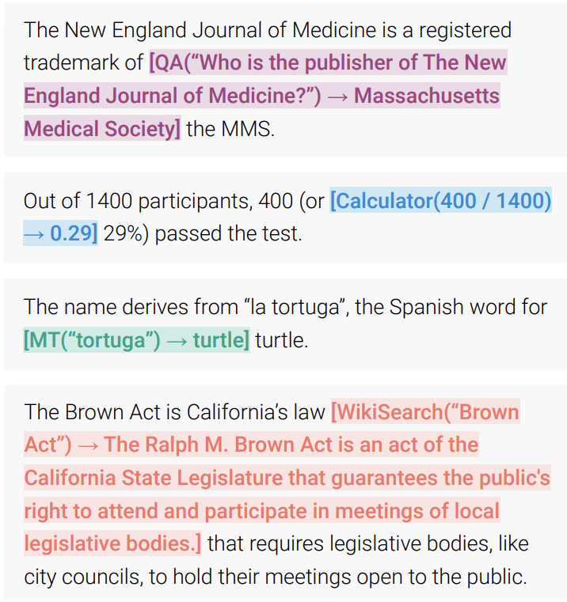
Keep only the calls that actually help
Filtering: a candidate API call is kept only if its result reduces the model's loss (perplexity) on the following tokens. Useful calls survive; others are discarded. The model is then fine-tuned on this augmented text.
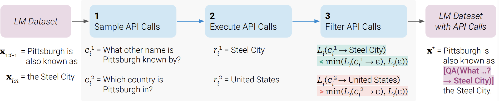
With tools, the 6.7B model beats GPT-3 (175B) on math and factual tasks: ASDiv 7.5 (without tools) → 40.4 (GPT-3 is 14.0), SVAMP 5.2 (without tools) → 29.4 (GPT-3 is 10.0).
Core language modeling is preserved: perplexity is unchanged when API calls are disabled.
From a handful of tools to 16,000+ real APIs
Open models lagged far behind ChatGPT at real tool use, partly for lack of training data. ToolLLM builds ToolBench, a large tool-use dataset, automatically with ChatGPT (no human labels), in three stages.
Collect APIs
Crawl 16,464 real REST APIs across 49 categories from RapidAPI Hub (a public API marketplace), keeping each one's documentation.
Generate instructions
ChatGPT writes diverse user requests that need one or several of these APIs (single-tool and multi-tool).
Annotate solution paths
ChatGPT searches for a working sequence of API calls for each instruction: the supervised target.
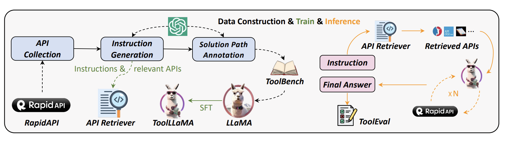
Backtracking search, and matching ChatGPT
Real API calls fail often (bad arguments, dead endpoints), so a single linear chain (ReAct) gets stuck. DFSDT (Depth-First Search-based Decision Tree) lets the model try several action paths and backtrack from a failed call.
- API retriever: a neural search model that selects the few relevant APIs from the 16k pool.
- ToolLLaMA: LLaMA-2-7B fine-tuned on ToolBench; reaches similar performance to ChatGPT, even on unseen APIs.
- ToolEval: an automatic ChatGPT judge scoring pass rate (finished in budget) and win rate (quality vs a reference).
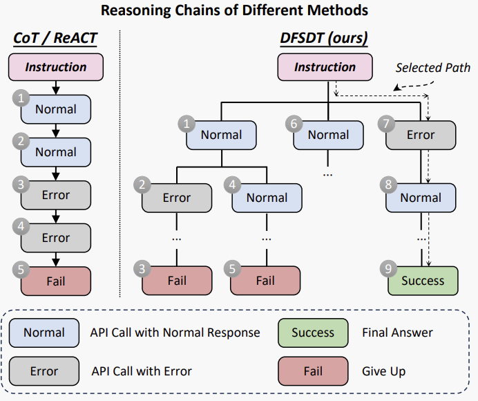
Stop picking from a menu. Write code.
Predefined JSON / text tool calls are rigid: they cannot easily compose tools or reuse libraries. Same task (find the cheapest country to buy a phone): the text agent takes many turns; CodeAct does it in one Python action.
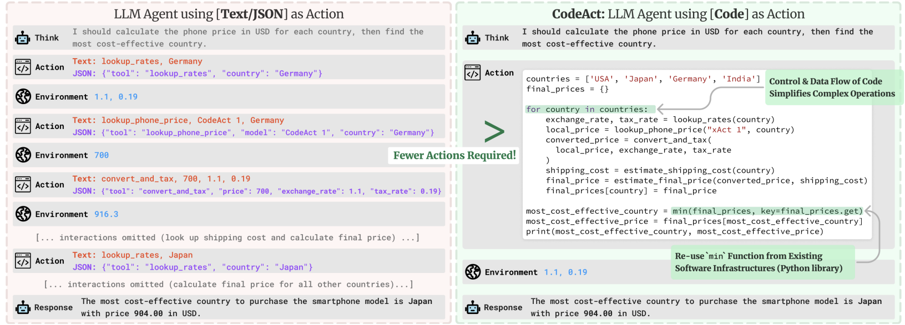
Composability
Chain many operations in one action.
Control flow
Loops, branches, functions for free.
Ecosystem
Call any existing Python library.
Fewer actions
One code block replaces many tool calls.
Run, observe, self-debug
The agent emits code; a Python interpreter executes it; the output or traceback comes back as an observation. The agent uses execution feedback to debug its own code and revise its plan across turns.
Where the skill comes from: data, then fine-tuning
No new human labels are collected. CodeActInstruct repurposes existing benchmarks into the code-action format, has strong models attempt them in the interpreter loop, keeps the trajectories that work, and fine-tunes a small open model on the result.
Repurpose existing tasks
7K multi-turn trajectories drawn from five capabilities: info-seeking (HotpotQA), symbolic math (MATH), code with self-debug (APPS), tabular reasoning (WikiTableQuestion), and embodied planning (ALFWorld). Each is recast so the action is Python code.
Generate & filter
Strong LLMs (GPT-4, GPT-3.5, Claude) solve each task in the run-observe loop. Keep only successful runs, favoring ones where the model errs then fixes itself, so the data teaches self-debugging (411 from GPT-4, 6,728 from GPT-3.5 / Claude).
Fine-tune
Full supervised fine-tuning of Llama-2-7B and Mistral-7B. CodeActInstruct is mixed with general chat data (ShareGPT, OpenOrca, CapyBara) so conversation and general ability are kept. Result: CodeActAgent.
The recurring recipe for agents: take an environment with ground truth (here, the interpreter), let a strong model generate trajectories in it, filter for the behavior you want (successful, self-correcting), and distill it into a smaller policy.
What makes a good tool for an agent?
Agents are non-deterministic and run under limited context, so tools need to be designed for agent ergonomics, not just wrap an existing API endpoint.
Build fewer tools
Consolidate workflows: one schedule_event is better than separate list/find/create calls.
Return meaningful context from tools
Prefer semantic names over opaque UUIDs; offer a concise vs detailed format. Be token-efficient: paginate, filter, truncate.
Namespacing
Group tools by prefix (asana_search, jira_search) so the agent selects the right one among hundreds.
Prompt-engineer the descriptions
Write specs as if for a new hire; use unambiguous names. Small refinements alone yielded SOTA on SWE-bench Verified.
Let the agent help optimize its own tools
The reliable way to get tools right is an evaluation loop: generate realistic tasks, run them in agentic loops, and collect more than accuracy: runtime, number of tool calls, tokens consumed, and tool errors. Then let Claude read the transcripts and refactor the tool definitions.
On both the Slack and Asana servers, Claude-optimized tools beat the original human-written tools on held-out test accuracy.
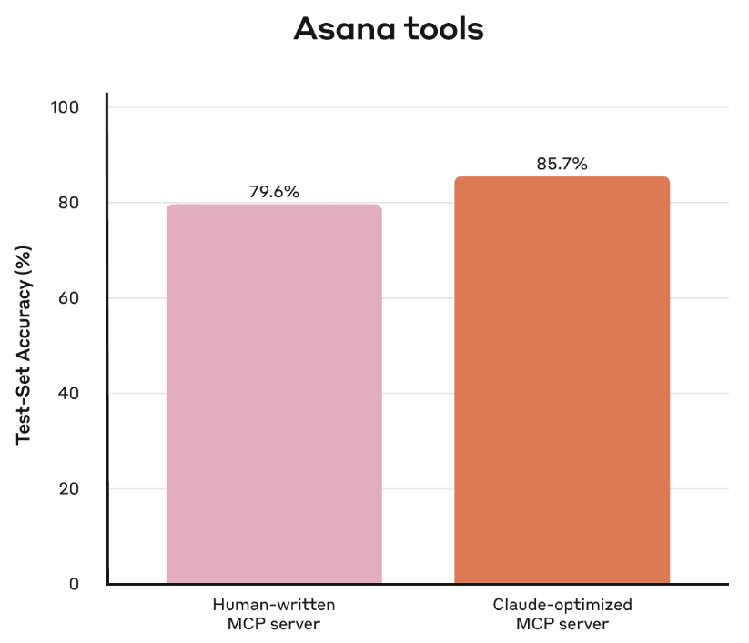
Deep research
Answering questions by browsing
Long-form QA needs evidence, but models hallucinate and give no provenance. WebGPT fine-tunes GPT-3 to answer in a text-based web-browsing environment. The model works purely in text: it reads a written summary of the current state and replies with a single command, then writes an answer with citations.
Commands (Table 1): Search, Click link, Find in page, Quote, Scroll, Back, End: Answer. The closest precursor to modern deep research.
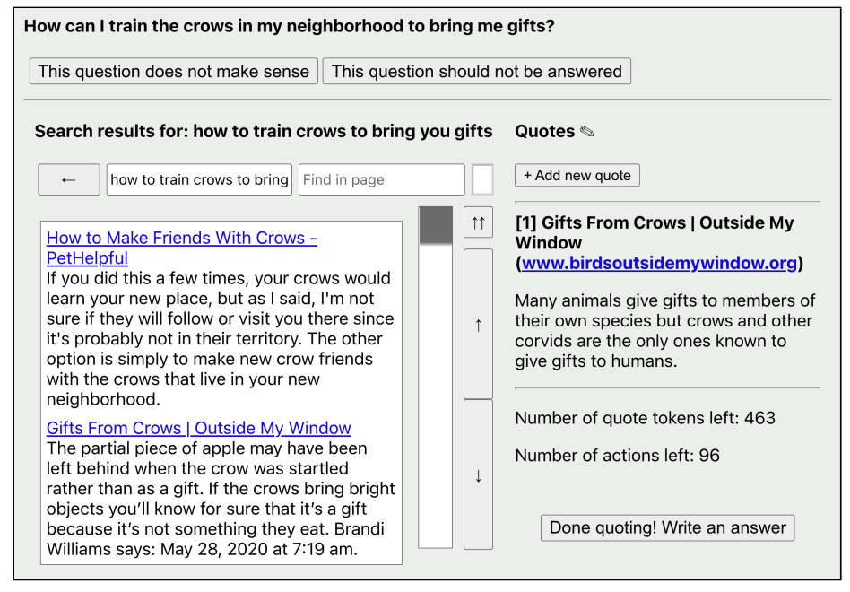
The browser above is for the humans who recorded demonstrations. The model instead receives a text summary of the same state (question, page text at the cursor, link indices, actions left) and outputs one text command.
Imitation, then a learned reward
Training combines behavior cloning from human browsing demonstrations with a reward model from human comparisons, used for RL and best-of-n rejection sampling: the same RLHF machinery seen in the alignment lecture, applied to a browsing policy.
An autonomous research analyst
Deep research autonomously conducts multi-step research: it searches, reads, and pivots based on what it finds across hundreds of sources, then produces a fully cited report, in 5 to 30 minutes.
- Powered by a version of o3 optimized for browsing and data analysis.
- Browsing-specific training: end-to-end RL on hard browsing and reasoning tasks; it learns to plan, backtrack, and react to live information.
- SOTA on Humanity's Last Exam (26.6%) and the GAIA web-research benchmark.
One lead agent, many parallel subagents
Research is open-ended: you cannot hardcode a path. Claude's Research feature uses the orchestrator-workers pattern: a lead agent plans and spawns subagents that explore in parallel, each with its own context window, then compress and return findings to be synthesized.
- Parallel breadth-first exploration.
- Separation of concerns: each subagent owns a sub-problem.
- More total context brought to bear than one agent could hold.
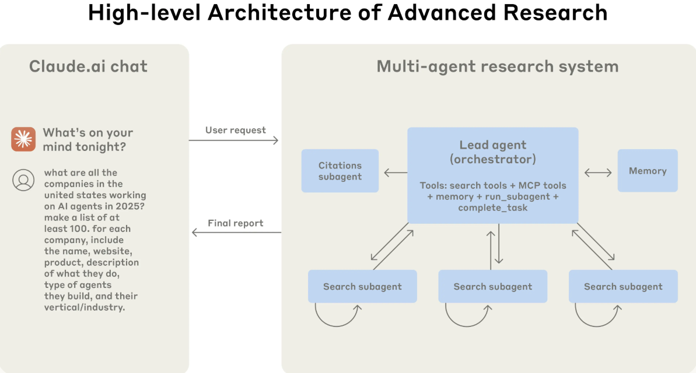
Performance tracks tokens
The downside
This is token-hungry (see right), so it pays off only on high-value tasks. Coordination, delegation prompts, and debugging stateful agents are hard.
Coding agents
Can a model resolve a real GitHub issue?
Toy coding benchmarks were saturated. SWE-bench uses 2,294 real issue + pull-request pairs from 12 popular Python repos (django, sympy, scikit-learn, ...). Given the full codebase and the issue, the model must produce a patch.
- Graded by running the repo's real unit tests:
FAIL_TO_PASS(bug fixed) andPASS_TO_PASS(no regressions). - Hard: huge context, cross-file edits, real-world reasoning.
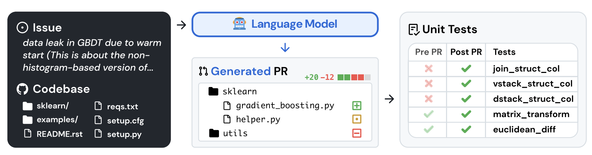
Almost nothing worked, at first
At release, the best model resolved only a tiny fraction of issues. SWE-bench gave a hard, objective target that keeps refreshing as repositories file new issues.
Why a "Verified" subset?
The unit tests were overly specific. Many samples were underspecified. It is sometimes hard to set up an environment; perfectly valid solutions might be graded as incorrect. So the full benchmark underestimates ability.
SWE-bench Verified is 500 tasks that 93 professional developers confirmed are solvable and fairly graded. Now the standard reporting set (frontier agents exceed 70%). The point is fair grading, not bad code: the repos are real and high quality; a subset of tasks just scored unreliably.
An agent that lives in a sandboxed repo
Codex runs each task in its own isolated, sandboxed cloud environment preloaded with your repository. It reads and edits files and runs commands (tests, linters, type checkers), then proposes a pull request you review.
Closing the SWE-bench gap
At release the best system solved only ~2% of the full SWE-bench (2,294 tasks). The field then moved to SWE-bench Verified, a different, cleaner 500-task subset (previous slide). On Verified, codex-1 reaches 72.1% with a single attempt and about 84% with multiple attempts.
Mind the test sets: the ~2% and the 72.1% are not the same benchmark, so this is a trajectory, not a like-for-like jump. The pattern that won: a model trained for the task, an environment it can act in and get ground truth from (run the tests), iterative self-correction, and a human reviewing the diff.
Web & computer-use agents
A realistic, reproducible web to act in
Agents had been tested in toy simulators. WebArena is a self-hosted, fully functional web with sites across 4 domains (e-commerce, social forum, GitLab, a CMS) plus tools and knowledge resources, and 812 long-horizon tasks given as natural-language intents.
- Graded by functional correctness: programmatic checks of the end state, not text matching.
The best GPT-4 agent succeeded on only 14.41% of tasks, versus 78.24% for humans. A large performance gap.
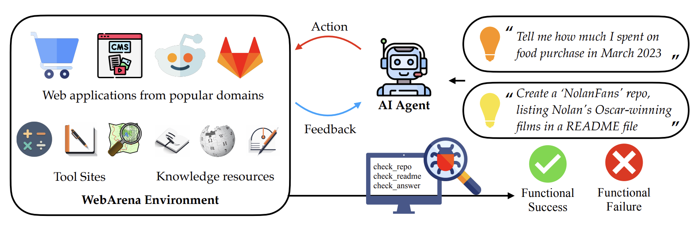
Three real tasks, three ways to check the end state
The agent acts with click / type / goto over the page's accessibility tree. It is then graded by functional correctness, on the resulting state, not the words. One task per reward type, verbatim from the paper:
From text pages to pixels, and beyond the browser
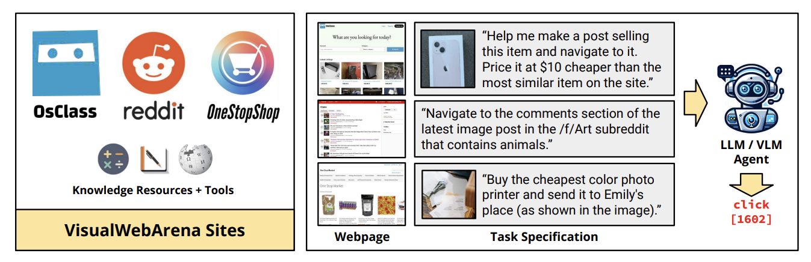
VisualWebArena: 910 visually grounded web tasks; many need image understanding. Text-only agents do poorly; even GPT-4V with set-of-marks reaches only 16.4% vs. 88.7% for humans.
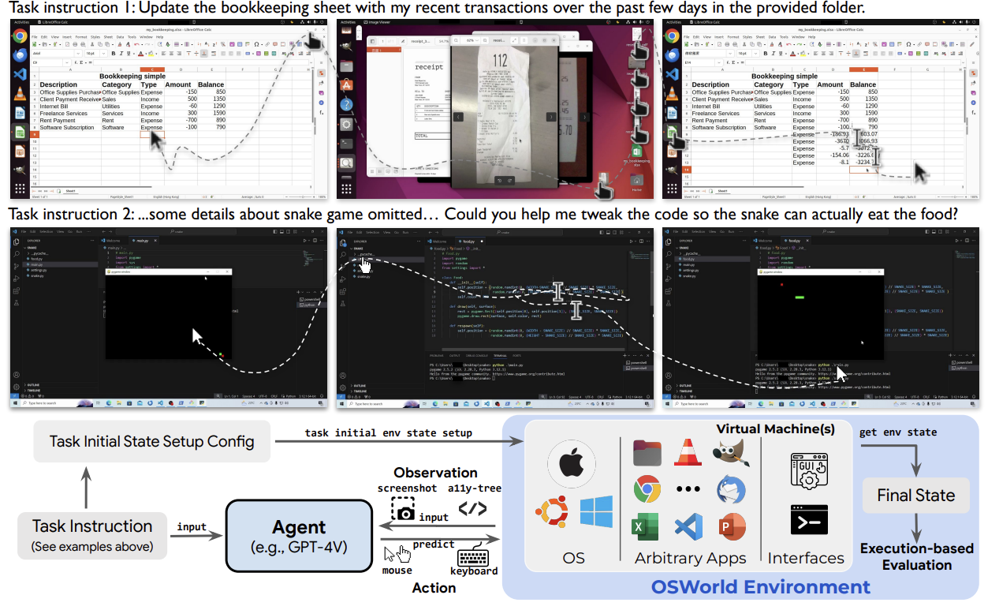
OSWorld: a real computer environment (Ubuntu, Windows, macOS), 369 tasks across real apps, with execution-based grading. Best agent 12.2% vs. 72.4% for humans.
Seeing the page, not parsing the HTML
Early web agents read raw HTML or accessibility trees. WebVoyager is an end-to-end agent built on a large multimodal model: it observes the rendered page as a screenshot with interactive elements marked, and acts on 15 real, live websites. It reaches 59.1% success.
Benchmark vs. agent
VisualWebArena is a reproducible, sandboxed benchmark graded by exact programmatic checks. WebVoyager is an agent on the live web. Its 643-task test set has no ground-truth checker: success is scored by an automatic GPT-4V judge.
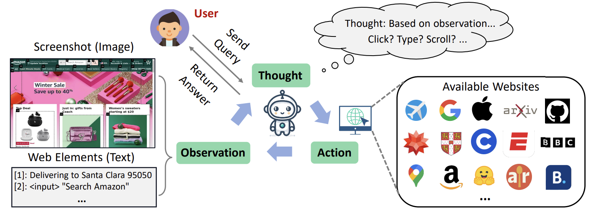
Protocols & skills
The M×N integration problem
You have M AI apps (Claude Desktop, Cursor, ChatGPT) and want to reach N systems (Drive, Slack, GitHub, Postgres). What matters is how many integrations you build and maintain, not how many links are possible.
Before: M × N
A separate connector for every app–tool pair. 3 apps × 4 tools = 12 connectors to build; a Slack one written for Cursor did nothing for Claude.
With MCP: M + N
Build one client per app + one server per tool = 3 + 4 = 7 reusable pieces. Any client then talks to any server, with no per-pair glue.
The old per-pair connectors were app-specific: ChatGPT plugins, LangChain tool wrappers, function-calling glue.
A standard interface, three primitives
A bidirectional client-server model: an MCP server exposes a system's capabilities; an MCP client (the AI app) connects to it. The server exposes three kinds of primitive:
Tools
Actions the model can invoke (functions with arguments).
Resources
Data the model can read (files, records, context).
Prompts
Reusable prompt templates the server offers.
Anthropic open-sourced the spec, SDKs, and a set of pre-built servers: Google Drive, Slack, GitHub, Git, Postgres, Puppeteer.
Why standardize
One uniform interface means an agent reaches every system the same way, so its working context carries across tools (read from Postgres, then act in Slack) instead of through siloed, tool-specific glue. Add a new system by adding a server, not by rebuilding the agent.
A real cross-vendor standard
Launched by Anthropic (Nov 2024), then adopted by OpenAI, Google DeepMind, and Microsoft in 2025, plus a large ecosystem of community servers. "Build once" only pays off because everyone now speaks it.
Package expertise as a folder
A model is a generalist: it does not know your team's procedures, formats, and conventions. A Skill packages that know-how as a plain folder, a SKILL.md file plus any scripts it needs, turning a general agent into a specialist.
- Each
SKILL.mdopens with a short YAML header: a name and a description (both required). - It can bundle runnable scripts, so exact steps (parse a PDF, sort data) run as code, not regenerated each time.
- Skills are portable and pair well with MCP: the skill captures the workflow, which can then call MCP tools.
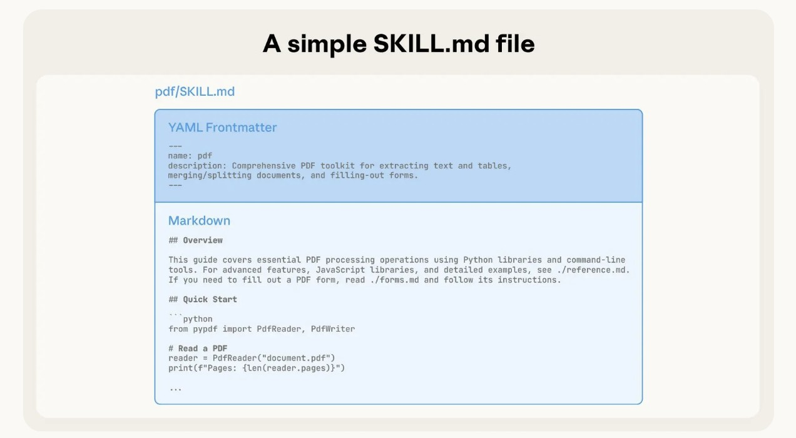
Load only what you need, when you need it
A finite context window cannot hold every skill in full. Progressive disclosure loads a skill in levels, like a well-organized manual, so its effective size is essentially unbounded: the agent pays context only for what it actually opens.
Metadata
Only the name and description are preloaded, so the agent knows the skill exists and when to reach for it.
SKILL.md body
The full instructions load into context only when the agent decides the skill is relevant to the task.
Bundled files
Extra reference files and scripts are read or executed only as needed, never all at once.
Net effect: a skill can carry far more material than fits in context, because each level is pulled in on demand. The same idea a human uses with a reference manual: skim the index, open only the chapter you need.
The agent capability stack
| Capability | Key idea | Landmark work |
|---|---|---|
| Reasoning | Elicit step-by-step thinking; interleave it with actions | CoT; ReAct |
| Tool use | Call APIs; train for it; write code instead of menus | Toolformer, ToolLLM, CodeAct |
| Tool design | Build fewer, ergonomic, eval-driven tools for agents | Writing tools for agents |
| Deep research | Autonomous multi-step browsing with citations; multi-agent | WebGPT, Deep Research, multi-agent |
| Coding | Real issues + executable tests; sandboxed iterative agents | SWE-bench, Codex |
| Web / computer use | Realistic environments; HTML → pixels (multimodal) | WebArena, OSWorld, WebVoyager |
| Connection | Standard protocol for tools/data; portable skill folders | MCP, Agent Skills |
Three things to remember
An agent is a loop, not a model
Reasoning, tools, and environment feedback turn a predictor into a system that acts. Start simple; add agency only when needed.
Capability comes from acting in the world
The biggest gains came from grounding: browsing, running tests, seeing the screen. The environment supplies the ground truth.
The trajectory is toward autonomy
Scripted tool loops became trained, autonomous, multi-agent systems, connected by shared standards. Capability and risk grow together.
What we covered, and where to read more
Thank you. Questions?
Next lecture: Agent & LLM security. Prompt injection, jailbreaks in agentic settings, and the security implications of tool use and MCP.